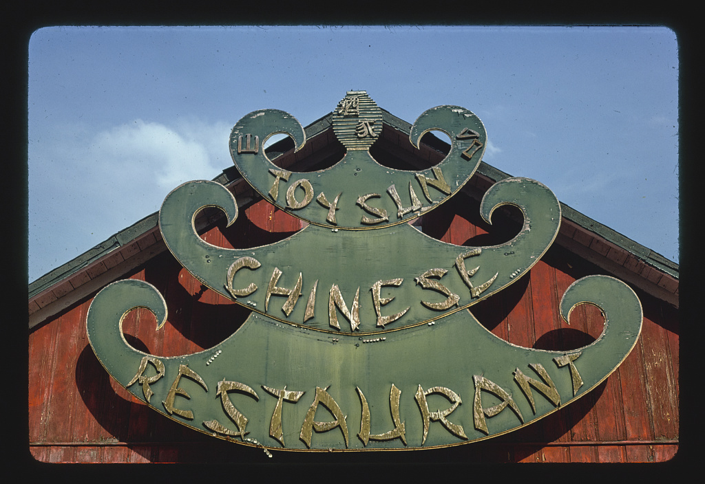
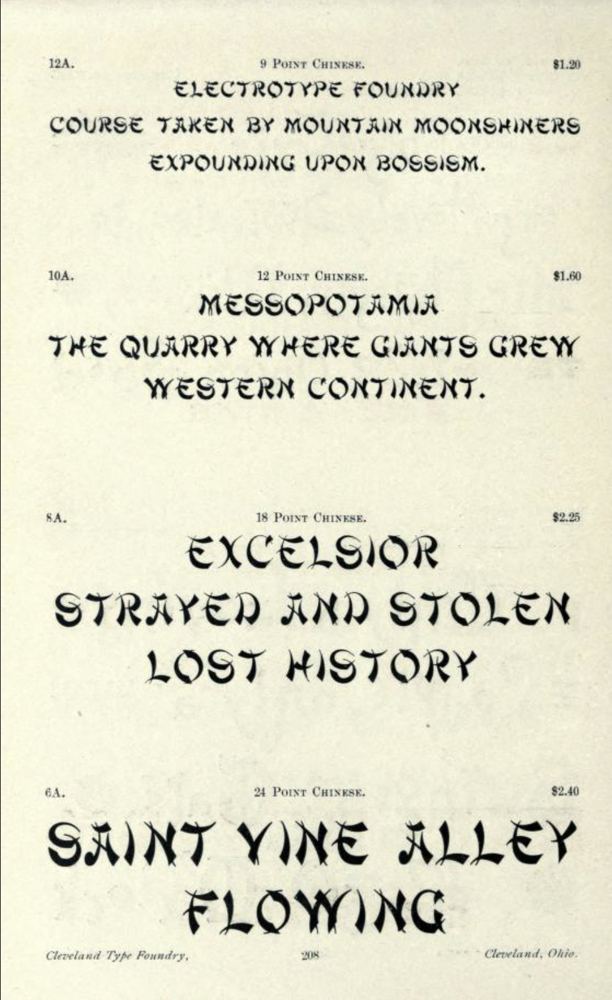
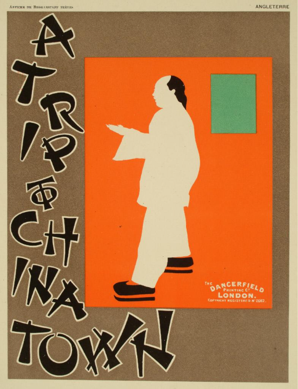
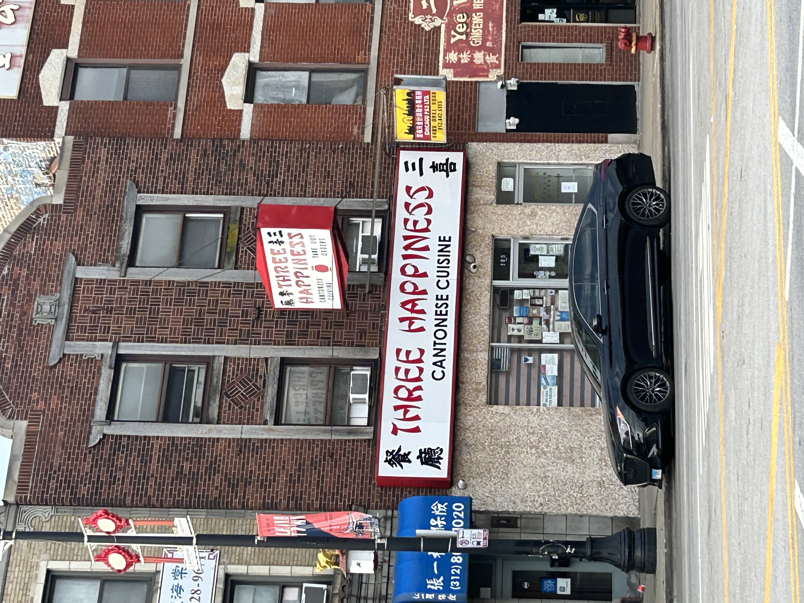

Most people in the United States have seen a chop suey font
before. Distinct in its sharp, tapered wedge-like shapes and
being “Chinese-like” in feeling, this font has lived on the
storefronts of many establishments, Chinatowns, and even in
product packaging across the country. This font and its
variations eventually came to be known as “chop suey” fonts.
Hop Kee Restaurant, Manhattan, New York. 2026.Katherine Chen
Chop suey fonts offer a false representation of “Chineseness”.
While it claims an aesthetic that exoticizes and stereotypes
an ethnic culture, chop suey fonts are a historical phenomenon
that held—and still hold— significant influence over the
global commercial market. Created by the Cleveland Type
Foundry and made for the dominant, primarily white audience of
the time, chop suey fonts highlight the complex circumstances
of Chinese American communities that sought to increase their
commercial visibility and unknowingly contributed to the
further racializing of their ethnocultural identity.
While chop suey fonts originated as a racist caricature of
Chinese culture, they eventually evolved into a practical
business strategy for Chinese Americans in a time of
anti-Asian sentiment. This publication also looks at how the
design industry contributed to the continued existence of chop
suey fonts in modern day typography and how designers are now
actively reconsidering the context of which a typographic
identity exists.
ONE. What is a Chop Suey Font?

Toy Sun Chinese Restaurant, Berlin, Connecticut.
1978.John Margolies Roadside America Archive
A “Chop suey” font, by definition, is a subcategory of
decorative typography that attempts to mimic and apply the
brushstrokes in Chinese calligraphy, creating a typographic
visual signal of “Chineseness.”1
The controversy with chop suey fonts is that it conveys a
surface-level Asian aesthetic with a poor mimicry of
character-based language writing system without acknowledging
authentic Chinese calligraphic practices. The reason behind
this is simple: chop suey fonts were an American invention
meant for white audiences, not Chinese ones.
A Distinctly American Invention
The term “chop suey” existed before the development of the
font letterforms. Chop suey (杂碎), meaning “odds and ends” in
Cantonese,2
is originally a Chinese American dish that was designed to
cater to the American palette, consisting mainly of stir-fried
meat, vegetables, egg, and rice or noodles, though its exact
origins are debated. For decades, chop suey became synonymous
with Chinese cuisine to most Americans.
The name eventually was applied to the faux-Chinese
typographic trope as a way to group the many variations of the
original font under an umbrella term. To Yu Li, an associate
professor of modern languages and literatures at Loyola
Marymount University, the connotation was simple:
“The chop suey letterform was an American invention to
convey the White American idea of what English text “should”
look like if it were to look Chinese.”3

Book of Specimens, 1883.Cleveland Type Foundry
The first commercial faux-Chinese font was created in 1883 by
the Cleveland Type Foundry, just one year after the Chinese
Exclusion Act of 1882. Known as “Chinese,” the font made its
first appearance in the Cleveland Type Foundry’s
Book of Specimens,4
which was a catalog of the typefaces and printing material the
foundry offered to their clients. “Chinese” was eventually
changed to “Mandarin” in the 1950s and would go on to inspire
several new variations of chop suey fonts.
Notes
Raven Mo, “Between Visibility and Marginality: The
Paradox of Chop Suey Font Economics,” presentation, May
26, 2026, posted June 30, 2026, by Atypl, Youtube, 0:37,
https://www.youtube.com/watch?v=Vkcl-KG_xL4. ↩︎
Yu Li, “The chop suey letterform and cultural hegemony
in global representation of visual Chineseness,” Visual
Communication 0, no. 0 (2025): 2,
https://doi.org/10.1177/14703572251328349. ↩︎
Li, “The chop suey letterform in historical Los Angeles
Chinatowns,” 166.
↩︎
TWO.
The Paradox of Visibility
At its core, the chop suey font is a product of its time and
cannot be solely defined as strictly harmful or beneficial to
the Chinese American community. The intention behind its
creation was superficial and ignorant, and there is an
inherent racism to aestheticizing an entire culture to make it
palatable to the white American eye. And yet, chop suey fonts
eventually became a crucial aspect of marketing for Chinese
American businesses during the 20th century.
Stereotyping and Aesthetic Imitation

‘A Trip to Chinatown Poster’, 1899.Beggarstaff Brothers
Chop suey fonts’ first popular commercial use appeared on “A
Trip to Chinatown”, an advertising poster for the London
premier of the Broadway musical of the same name. Designed by
the Beggarstaff Brothers, William Nicholson and James Pryde,
in the United Kingdom in 1899, the original poster design did
not include a chop suey font at all—it was added in post by
the printing company, Dangerfield, in 1894.1
Despite the designers’ disapproval of the addition of chop
suey letterforms, the poster gained global popularity and
became the first known instance of chop suey font usage
outside of the United States. Its positive global reception
resulted in an uptick in use and popularity within the United
States.2
Chop suey fonts would also make appearances in various forms
of media entertainment, such as movie titles and book
covers.3
Historically, chop suey fonts were also frequently used for
anti-Asian propaganda that followed events such as the Chinese
Exclusion Act of 1882, Yellow Peril, World War II, and more
recently, the COVID-19 pandemic. Raven Mo stated that the chop
suey font “aesthetic became inseparable from the racism it was
used to promote,”4
and further contributed to the social marginalization that
Asian American communities have experienced. The poster “Go
ahead, please—TAKE DAY OFF!” was designed by the U.S. Bureau
of Special Services as World War II propaganda. Along with the
caricature illustration of a Japanese soldier and the
linguistic mockery, the Bureau of Special Services also used a
chop suey font to further perpetuate racist stereotypes,
fueling fear and hatred toward Japan.
‘Go Ahead, Please—Take Day Off!’, 1941.Bureau of Special Services
Chop suey fonts reinforced Asian American communities as
foreign and exotic, othering them and intentionally creating a
hostile environment around them. What was once used against
Chinese Americans pivoted to target Japanese Americans
instead, forcing multiple ethnic cultures to flatten into one
oriental caricature. Chop suey fonts continued to contribute
to the stereotype through more mundane means and were
frequently used to promote food products, cookbooks, and other
exotic products and experiences to a primarily white consumer
base. Overall, the font was used to convey a palatable and
commercialized version of Asian, specifically Chinese,
cultures to a Western audience.
Authenticity is a Luxury
Ironically, chop suey fonts had the highest amount of usage by
Chinese immigrants in areas with a high population density of
Chinese Americans because for many, its use along with other
visual symbols often suggested business success, financial
stability, and survival. At the time, most Chinese Americans
could not afford to worry about stereotyping, because
“When fighting for basic human rights, authentic cultural
expression is a luxury.”5
However, this business success came at the cost of chop suey
fonts perpetuating harmful stereotypes that continue to follow
Asian American communities to this day. When given the choice
between financial success and stability verses cultural
authenticity, Chinese Americans made the choice that increased
their chances of survival. The problem, however, lies not with
the choice that was made, but that the problem was presented
in the first place. Chop suey fonts are an example of cultural
hegemony in practice, in which “the dominant group dictates
cultural norms, and cultural norms reinforce themselves and
the power structure.”6
It flattened entire ethnic cultures into a single visual style
just to make it appealing to a white audience.
Chinese businessowners leaned into the cultural stereotype
intentionally, because even though it exoticized and
marginalized them, it was a pragmatic marketing strategy that
created more incentive to comply with than oppose.7
However, this strategy also resulted in the reinforcement of
harmful social norms and the further reduction of Chinese
culture into a superficial, marketable caricature that can be
turned into a commodity.
During the 20th century, chop suey fonts became a visual
shortcut for “Chineseness” in the West: becoming common sights
in places like Chinatown and other Asian ethnic enclaves
across the United States. Together with other visual motifs
associated with Chinese culture, the repetitive use of chop
suey fonts further contributed to the formation of the visual
stereotype of Chinese culture. Other common visual signals
included colors of red, yellow, and gold, Chinese dragons,
lanterns, and/or the sweeping roofs of Song Dynasty pagodas
were almost always included.8
Many Chinese American sought to utilize the exotic stereotype
to their advantage, using chop suey fonts and other common
“Chinese” visual motifs as easy identification for their
businesses and to attract non-Chinese consumers, and their
success caused others to do the same until it became
commonplace.
Chew Yuen Co., New Chinatown, Los Angeles,
2026.Katherine Chen
New Chinatown Sign, New Chinatown, Los Angeles,
2026.Katherine Chen
Though it has since fallen out of style, to this day you can
still find restaurants and businesses within Chinatowns around
the country that still use chop suey fonts on their signage.
It is a visual shortcut, albeit a controversial one, that
people still instantly recognize. Its continued use can be
attributed to older signage, nostalgia, or passed-along
aesthetic traditions.
Chinatown Fight Club, New York City, 2026.Katherine Chen

Three Happiness Cantonese Cuisine Restaurant,
Chicago, 2026.Jalen Chang
Notes
Li, “The chop suey letterform and cultural hegemony in
global representation of visual Chineseness,” 4.
↩︎
In 2020, Seattle-based designer Mingxuan Shen designed *New
Wonton*, a reimagined Latin-based typeface that accurately
represented Chinese calligraphic techniques. She is not the
only designer to take on this challenge. A few years later in
2023, designer Junyi Zhu was inspired by Chinese calligraphy
and designed the English display typeface *Jin Imitation* to
connect Chinese and Western design principles. Within the last
two decades, there has been a shift in the type design
community that prioritized global accessibility and cultural
sensitivity. For chop suey fonts, which are culturally
*insensitive* despite their former popularity, it means
reimagination and reinvention.
The Inaccuracies of Chop Suey Letterforms
The defining visual characteristic of chop suey fonts are
their tapered wedge-like shapes that are meant to mimic
Chinese calligraphic strokes, but is actually incomprehensive
to native Chinese speakers. The Chinese writing system, known
as Hánzí (汉字), uses a system in which each character is
written following a strict stroke order that typically goes
from top to bottom, left to right. The main difference between
the Latin alphabet and Chinese characters is that Latin
letters do not need to follow a stroke order—each part of the
letter can be written on its own in no particular order and
the result would be the same.1
For Chinese characters, there are eight main types of strokes:
Diǎn (点), the dot stroke, Héng (横)the horizontal stroke, Shù
(竖), the vertical/erect stroke, Gōu (钩), the hook stroke, Tí
(提), the lift stroke, Wān (弯), the curve stroke, Piě
(撇),the slant stroke, and Nà (捺)the press stroke.2
As shown through Mingxuan Shen’s diagram (Figure 11), the
character Yǒng (永) uses all eight stroke types, and is
usually used for Chinese calligraphy practice. Chop suey fonts
tend to only use two types of strokes—Tí (提), and Nà (捺),
the lift and press stroke—and uses them incorrectly.3
As a result, chop suey fonts appear stiff, fractured into
several pieces, and flat. They intentionally ignore the nuance
and details that apply to Chinese calligraphy while
overexaggerating a few individual characteristics to create a
visual aesthetic that suits the exotic narrative they are
promoting.
Another significant difference is the frequent use of rounded
shapes in the Latin alphabet, whereas Hánzí seldom uses
circular strokes, unless it follows a specific calligraphic
style.4
These two fundamental differences result in chop suey fonts
lacking structure and cohesiveness, as the Hánzí stroke
characteristics are used haphazardly in random arrangements to
form the shape of Latin letters.
Despite being the subject of controversies and debate in
recent years, chop suey fonts still exist within some typeface
foundries and databases. Though it has become increasingly
unpopular, databases such as DaFont still feature several chop
suey style fonts, and their download numbers suggest that they
are still more popular than one might think.5
Since its creation, chop suey fonts have been classified as
display fonts, falling under the “decorative typography”
category. When the lack of cultural authenticity is taken out
of consideration, the label makes sense; they are highly
stylized with ornamental elements, made to be displayed at
large sizes, and are attention grabbing.6
This label, however, is what has legitimized “ethnic display
typefaces” like chop suey fonts as professional typeface genre
within the design industry, thus allowing for increased
visibility and demand, which in turn resulted in its continued
use.7
When chop suey fonts began to increase in popularity of use,
many variations in the chop suey letterform from various
designers and type foundries. Each came with their own “Asian”
sounding name from generic terms, ranging from “wonton”—one of
the more well-known variations—to “karate” or “chopsticks”.
All of them are classified as “decorative typography.”
New Wonton
Like Raven Mo, Mingxuan Shen came to the U.S. as an
international student, and was confused and surprised by chop
suey fonts she saw on restaurant signage. To her, chop suey
fonts felt odd and aggressive, yet somewhat familiar due to
her experience as a Chinese calligraphy practitioner.8
After critically examining chop suey fonts, she was inspired
to create New Wonton by drawing on her own cultural
experiences in an attempt to decolonize design.9
Basing New Wonton on the Ou style Chinese
calligraphy, Shen wanted the letterforms of New Wonton to be
“recognizably in the Ou style”, characterized by confident
strokes that tended to have straighter horizontal and vertical
lines.10
In the early stages of her design process, Shen tested
different stroke orders for each Latin letter to find the best
fit, already created a marked difference to chop suey fonts
and their haphazard stroke placements. Shen is intentional in
her incorporation of the different types of stroke units,
utilizing them in a consistent way that feels both natural and
sophisticated. She is also intentional in how she added visual
inconsistencies between letterforms, such as the differences
in the left vertical strokes of ‘M’ and ‘N’ (Figure 14) in
order to maintain the organic quality of authentic Chinese
calligraphy.11
Each letterform in New Wonton feels connected and unique
compared to the frequent repetition of a single aggressive
stroke seen in chop suey fonts.
Though New Wonton is only designed for uppercase
Latin letterforms, Shen has also designed a set of numbers,
symbols, and character glyphs to be used along with the
typeface. It is still intended to be used as a display
typeface but showcases readability at various sizes.
Shen’s creation of New Wonton is an effort to
reimagine Chineseness in a manner that both challenges the
misrepresentation of Chinese culture from non-Chinese
designers and the false perceptions chop suey fonts have
perpetuated for decades.
Junyi Zhu also has a similar background to Mingxuan Shen,
having grown up in China where she was exposed to and grew
familiar with Chinese calligraphic aesthetics and coming to
the United States for a formal education in design. Inspired
by Zhao Ji’s slender gold (shoujin) script in Chinese
caligraphy, Zhu created Jin Imitation with the
intention of capturing the “elegant and dynamic essense of
Chinese calligraphy”12
and bringing her experiences together.
Similar to Shen’s New Wonton,
Jin Imitation has specific characteristics specific
to the Chinese calligraphic style that inspired it that are
tailored to work seamlessly with Latin letterforms. Each
letterform has a more condensed structure and a thin stroke
weight designed to mimic the thinner strokes of a light hand
and fast brush (Figure 17). Serifs are designed to look like
hooked strokes and feel heavier in weight.
Jin Imitation comes together as an elegant English
typeface that feels like natural brushwork without
compromising Chinese calligraphic practices or Western design
principles and legibility.
Zhu also designed a full set of upper and lowercase
letterforms for Jin Imitation, along with a set of
numbers and symbols with it, giving it a wide range of
potential uses. As a display typeface,
Jin Imitation challenges the existence of chop suey
fonts as an inauthentic attempt of combining Chinese
aesthetics with Latin letters and addresses how Chinese and
English type design can be integrated together with respect to
both despite its challenges.13
It is a cultural fusion of design and cultural principles that
reflect Zhu’s background and experiences while also
demonstrating the range of Chinese calligraphic aesthetics
that chop suey fonts had ignored.
Raven Mo, “The American Origins of the Chinese Takeout
Font,” interview by Linus Boman, posted February 1,
2026, by Linus Boman, Youtube, 3:25–3:34,
https://www.youtube.com/watch?v=YP9gEeVQZ2U. ↩︎
Mo, “The American Origins of the Chinese Takeout Font.”
3:48–4:00.
↩︎
Mo, “Between Visibility and Marginality.” 6:36–6:45.
↩︎
Mingxuan Shen, “Designing Chineseness: an interview with
Mingxuan Shen on the New Wonton typeface,” Interview by
Yu Li and Raven Mo, Visual Studies 41, no. 1 (2026): 82.
https://doi.org/10.1080/1472586X.2025.2567369. ↩︎
House of Moy Lee Chin Restaurant, Miami Beach, Florida.
1980.John Margolies Roadside America Archive
Chop suey fonts have since fallen out of style and have been
replaced by a combination of common san-serif typefaces and
non-English typefaces. These days, the use of chop suey fonts
is viewed as the mark of an amateur designer and can usually
only be found on the signage of older Chinese restaurants that
have existed for decades. Though their origins and the
ignorance in their creation cannot be ignored, nor can the
positive and negative impact chop suey fonts have had on the
Chinese American community.
Times have changed since the circumstances of their use, and
the Asian American community is no longer concerned with
catering to a strictly Western audience. There has been a
change in the socioeconomic landscape, where people have begun
to value an authentic cultural experience over a westernized
one. The design community has also chosen to move forward,
developing more non-English fonts and acknowledging the
importance of cultural sensitivity and message within every
design, intentional or not.
Chop suey fonts are a part of design history that is often
passed over and unacknowledged, yet their influence, though
silent, is pervasive and reflects a time of discrimination and
racial stereotyping that still follows Asian American
communities to this day.
Chen, Yong. “Introduction: Chop Suey, the Big Mac of the
Pre-Mcdonald’s Era.” In
Chop Suey, USA: The Story of Chinese Food in America.
Columbia University Press, 2014.
http://www.jstor.org/stable/10.7312/chen16892.5.
Kōhei, Sugiura.
Books, Letterforms and Design in Asia : Sugiura Kohei in
Conversation with Leading Asian Designers. Mumbai: ADARG and Marg Foundation, 2014.
Li, Yu. “The chop suey letterform and cultural hegemony in
global representation of visual Chineseness,”
Visual Communication, 2025.
https://doi.org/10.1177/14703572251328349
Mo, Raven. “Between Visibility and Marginality: The Paradox of
Chop Suey Font Economics | Raven Mo | ATypI.” Atypl,
YouTube. Video, 26 min., 14 sec. June 30, 2026.
https://www.youtube.com/watch?v=Vkcl-KG_xL4
Mo, Raven. “The American Origins of the Chinese Takeout Font.”
Interview by Linus Boman, YouTube. Video, 19 min., 55
sec. February 1, 2022.
https://www.youtube.com/watch?v=YP9gEeVQZ2U.
Pater, Ruben.
The Politics of Design: A (Not So) Global Manual for Visual
Communication. BIS Publishers, 2016.
Shen, Mingxuan. “Designing Chineseness: an interview with
Mingxuan Shen on the New Wonton typeface,” Interview by Yu Li
and Raven Mo, Visual Studies 41, no. 1 (2026): 80-86.
https://doi.org/10.1080/1472586X.2025.2567369
Jolina Chen is the 2026 Getty Marrow Undergraduate
Intern for Getty Publications, working in Production,
Design, and Rights. She is also a graphic designer and
recent grad Cal Poly SLO with a passion for
publication, advertising, and UI/UX design.